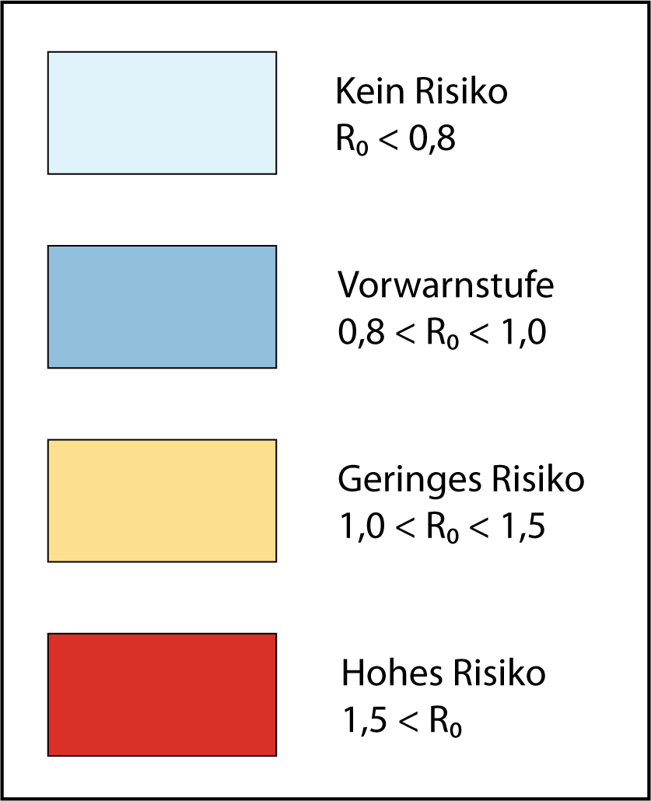

X
☰
Datumsauswahl
Angezeigter Tag:
Start Datum:
End Datum:
Wähle einen Kreis

Legende der Risikokarte. Die R0-Werte werden in vier Risikostufen eingeteilt: Minimales Risiko (0,8-1,0), Leichtes Risiko (1,0 - 1,2), Erhöhtes Risiko (1,2 - 1,5) und Hohes Risiko (> 1,5).
Risikokarte West-Nil-Virus